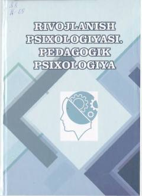

RPRivojlanish va pedagogik psixologiya fanlari bo'yicha oliy ta'lim uchun mo'ljallangan darslik.
Ushbu darslik rivojlanish va pedagogik psixologiyaning nazariy asoslari, insonning yosh davrlari bo'yicha psixologik xususiyatlari hamda ta'lim va tarbiya jarayonlarining psixologik mexanizmlarini qamrab oladi. Kitobda o'quv faoliyati, o'qituvchi shaxsi va pedagogik qobiliyatlarni rivojlantirish masalalari atroflicha yoritilgan.